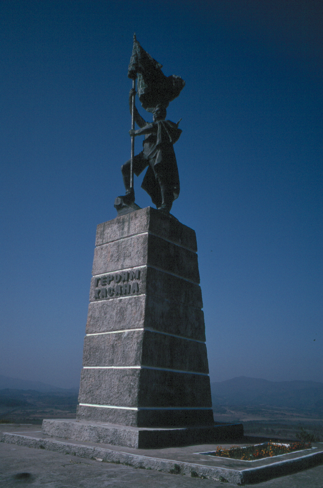
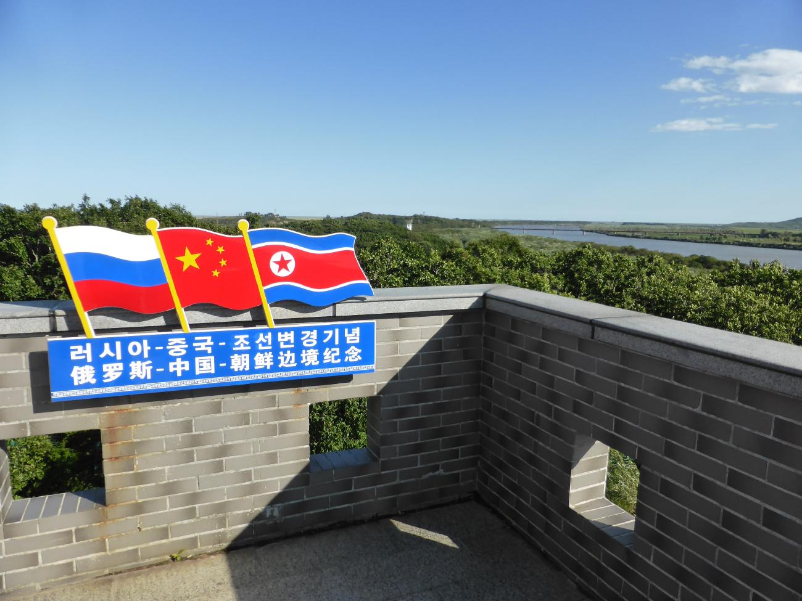
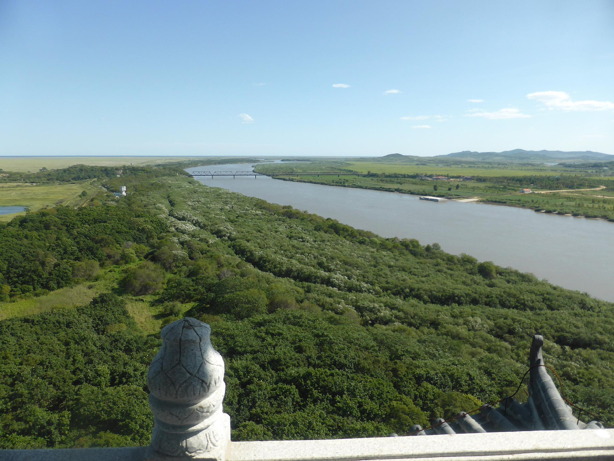
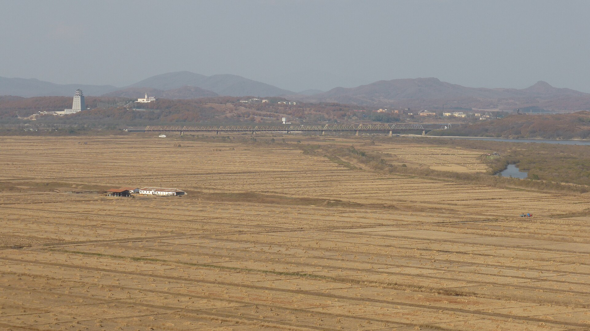
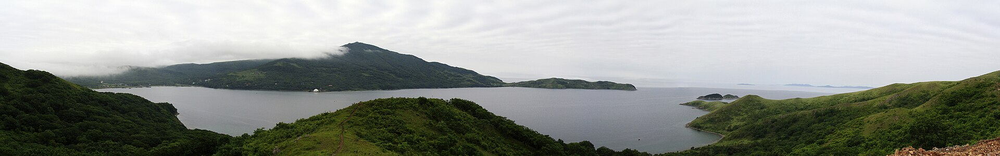

Выезд на юг
Стартовать до восьми. Дорога вдоль Амурского залива через Славянку тянется несколько часов. Обед закладывайте в районе Витязя, а не «где-нибудь по пути».
День 06 из 10
Длинный южный день. Полуостров Гамова, бухта Витязь и край России, где сходятся границы с Китаем и КНДР.
Стартовать до восьми. Дорога вдоль Амурского залива через Славянку тянется несколько часов. Обед закладывайте в районе Витязя, а не «где-нибудь по пути».
Полуостров Гамова, бухта Витязь, маяк на оконечности. Это южный морской фасад залива Петра Великого: скалы, сосны, вода другого цвета, чем у городских пляжей.
Если силы и свет позволяют — мемориал боёв у озера Хасан 1938 года. Ночевать разумнее в Славянке или Барабаше: завтрашний парк начинается отсюда же, а не из Владивостока.
Хасанский район — самый юго-западный в крае и один из самых тихих на карте большой политики, хотя политика здесь буквально на земле. По реке Туманной проходит единственная сухопутная граница России с КНДР, рядом стык с Китаем. Районный центр — посёлок Славянка, порт Посьет старше Владивостока как якорная стоянка и назван в честь адмирала.
Полуостров Гамова и бухта Витязь — причина ехать именно сюда, а не «просто на юг». Маяк на мысу держит вход в залив. Бухта мелкая, тёплая по приморским меркам, закрытая от городского шума. Летом это курорт, в остальное время — берег, на котором хорошо видно, как мало здесь людей на километр границы.
Бои у озера Хасан шли с 29 июля по 11 августа 1938 года. Для курса о государственности это не живописная остановка, а память о том, как проверяли дальневосточный рубеж ещё до большой войны. Мемориал стоит в стороне от маяка. Не склеивайте его с купанием в одну спешную точку: либо закладывайте отдельный час, либо честно оставляйте на следующий приезд.
Дорога обратно в Владивосток в тот же вечер ломает седьмой день. Земля леопарда и водопад Неожиданный лежат в этом же районе, у Барабаша. Ночёвка на юге — часть маршрута, а не прихоть.
Седьмой день не уезжает далеко. Он уходит с берега в лес того же района: парк «Земля леопарда» и водопад.




